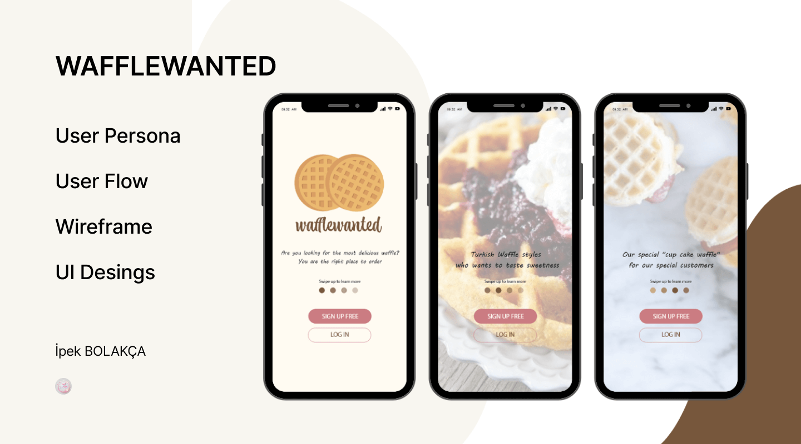
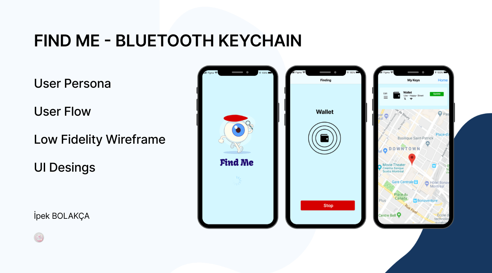
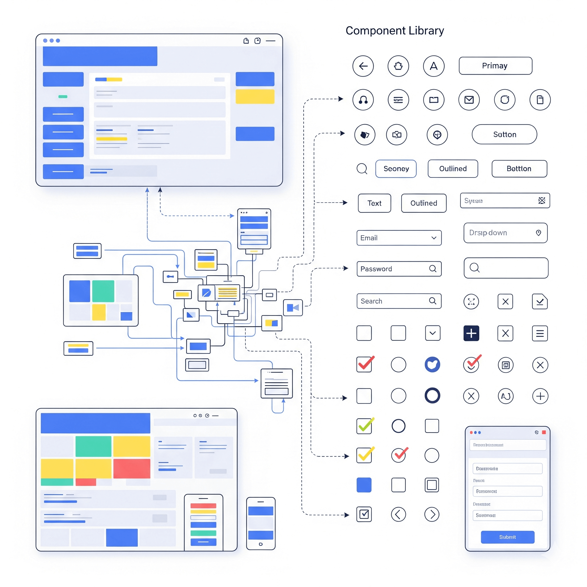

Araştırmadan arayüze, kullanıcıları anlayan ve markaların dilini konuşan dijital deneyimler tasarlıyorum.
Çok dilli (EN–DE–TR) projelerde kültürel bağlamı gözeterek erişilebilir arayüzler üretiyorum
| Projeler | İletişim |
| WaffleWanted — Mobile App UI
Kullanıcıların waffle siparişi verebileceği, 
|
FindMe Bluetooth — IoT Companion App
Bluetooth tabanlı cihaz eşleştirme ve bulma uygulaması. 
|
Dashboard UI Design
Veri odaklı bir yönetim paneli için modern dashboard tasarımı. .png)
|
HAKKIMDA |
|
|---|---|
|
I'm a passionate UX/UI Designer and Digital Marketing Specialist
with over 5 years of experience creating human-centered digital experiences.
My expertise spans across user research, interface design, and multilingual communication. |
|
HİZMETLER |
|||||
|---|---|---|---|---|---|
| UX Research & Strategy
User interviews, personas, journey mapping, |
UI Design
Visual design, prototyping, design systems,  |
Translation (EN - DE-TR )
Veri odaklı bir yönetim paneli için modern dashboard tasarımı. |